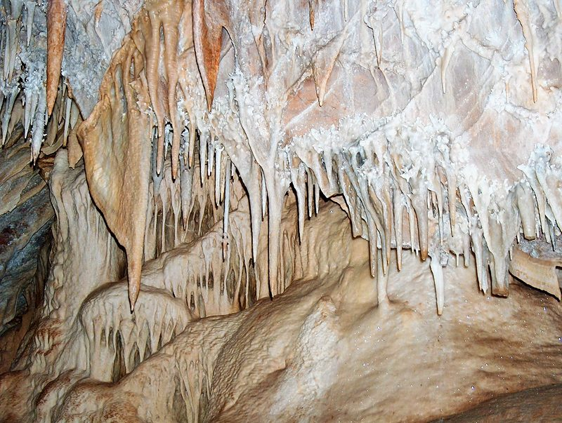
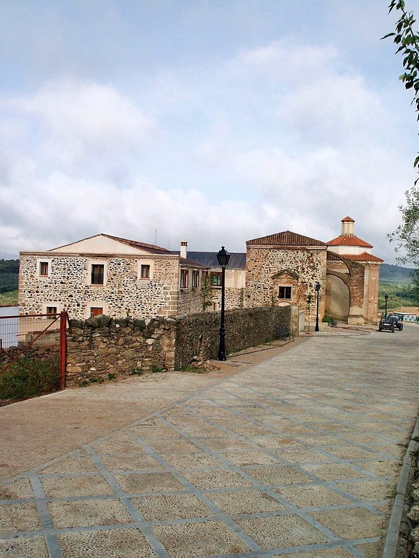
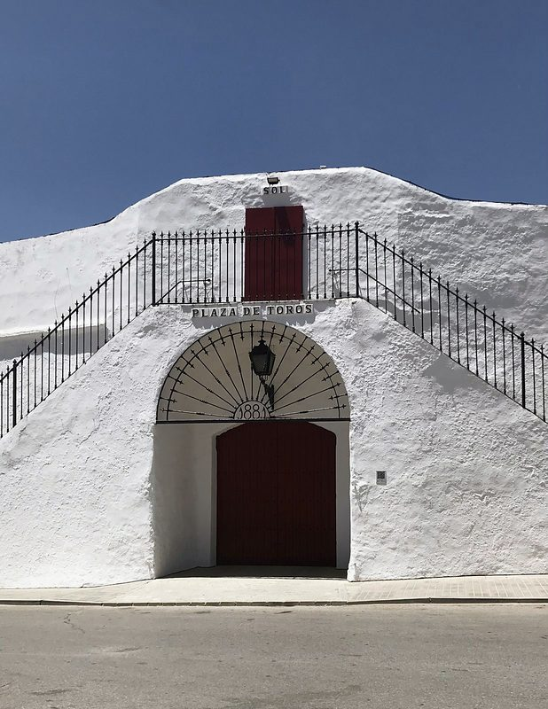
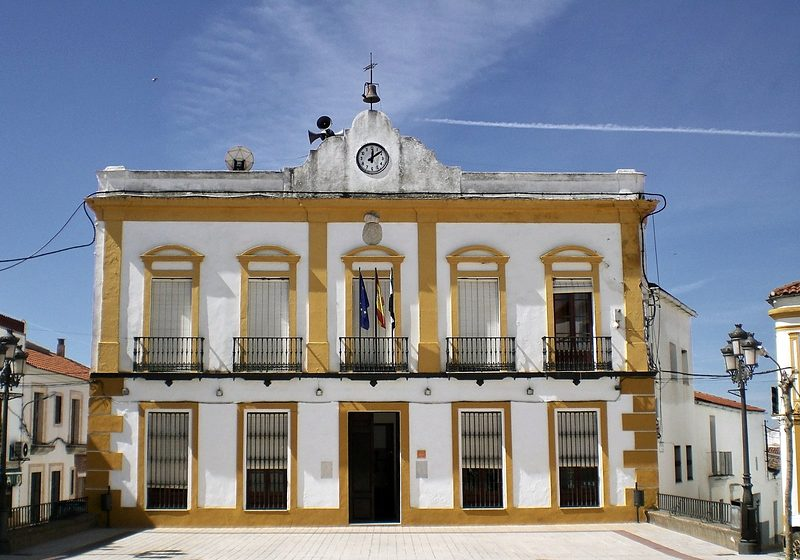

Ayuntamiento de Fuentes de León
Hoy en Fuentes miércoles 7 de octubre
Ayuntamiento
Abierto ahora · cierra a las 15:00
Lunes a viernes, de 8:00 a 15:00. Un martes al mes, de 16:00 a 18:30, y tres miércoles al mes, de 17:00 a 19:30
Farmacia de guardia
Consulte la de hoy en la web del Colegio Oficial de Farmacéuticos de Badajoz, se abre otra web
Lo próximo en la agenda
Domingo 11 de octubre · Bodonal de la Sierra
Domingo 11 de octubre, 10:00 · Plaza de España
Nuestra Señora de los Ángeles (patrona)
Lunes 2 de agosto de 2027
Último aviso
Convocatoria del Pleno extraordinario del 9 de octubre, se abre la sede electrónica
Lunes 5 de octubre · Tablón oficial
Más hoy
Sede electrónica: 111 trámites en la sede, las 24 horas
Los trámites más pedidos
Todos los trámites- Empadronarme, se abre la sede electrónica Alta o renovación en el padrón
- Domiciliar recibos, se abre la sede electrónica Alta, baja o cambio de cuenta
- Licencia de obra, se abre la sede electrónica Licencia o autorización urbanística
Vivir aquíPadrón, certificados, boda civil
Casa, obras y campoLicencias, agua, quemas
- Obra pequeña: declaración responsable, se abre la sede electrónica
- Obra mayor: licencia urbanística, se abre la sede electrónica
- Licencia de ocupación, se abre la sede electrónica
- Dar de alta el agua, se abre la sede electrónica
- Cambiar el titular del agua, se abre la sede electrónica
- Permiso para quemar rastrojos, se abre la sede electrónica
Pagos e impuestosRecibos, aplazamientos, bonificaciones
Familia, mayores y ocioAyuda a domicilio, servicios sociales, cursos
Opinar y avisarQuejas, incidencias, información pública
Tablón de avisos
Todos los avisos y anunciosLos 6 más recientes de 10.
- Convocatoria del Pleno extraordinario del 9 de octubre, se abre la sede electrónica
- Plaza de jardinero o jardinera municipal: convocatoria y bases, se abre la sede electrónica
- La biblioteca tiene nuevo horario desde el 14 de septiembre
- Tasa por ocupar la vía pública con obras: aprobación inicial del cambio, se abre la sede electrónica
- Cortes temporales de calles para la hostelería: aprobación inicial de la ordenanza, se abre la sede electrónica
- Plan municipal contra incendios forestales: aprobación inicial, se abre la sede electrónica
- Tasa por ocupar la vía pública con obras: texto de la ordenanza, se abre la sede electrónica
- No se pueden tirar animales muertos a los contenedores ni al Punto Limpio
- La oficina de la trabajadora social está ahora en el consultorio médico
- Contenedor marrón: el kit de reciclaje se recoge en el Ayuntamiento
Los anuncios marcados «Tablón oficial» vienen del tablón de anuncios de la sede electrónica, con el título explicado en lenguaje claro.
Lo que viene y lo que pasó
Hoy, miércoles 7 de octubre
Lo que viene
Pleno
Agenda
XLVII Día de la Mancomunidad
Bodonal de la Sierra
Agenda
VII Concentración senderista
Plaza de España
Lo que pasó
Noticia
Una nueva sala conecta la Cueva de los Postes con la Cueva Nueva
La campaña de este verano en las Cuevas ha abierto cerca de 100 metros de galerías y ha confirmado que las dos cavidades son un mismo sistema.
Noticia
El consejero Abel Bautista visita las Cuevas de Fuentes de León
El vicepresidente de la Junta recorrió el Monumento Natural, declarado en 2001, acompañado de la alcaldesa.
Noticia
Nuevo equipamiento para los Pisos Tutelados y el Centro de Día Santa Ana
Lavadora, secadora, televisores, butacas y sofás, con una subvención del Plan Impulsa ODS de la Diputación.
El año en Fuentes
Las fiestas, en «El pueblo»Enero
Sin fiestas señaladas
Febrero
- CarnavalFebrero o marzo
Marzo
- Feria del Jamón IbéricoEn marzo (en 2026, del 19 al 22)
Abril
Sin fiestas señaladas
Mayo
- Romería de San IsidroEn mayo
Junio
- Corpus Christi Fiesta mayorJueves, 60 días después del Domingo de Resurrección (en 2026, el 4 de junio)
- San Pedro y San OnofreÚltimo fin de semana de junio
Julio
Sin fiestas señaladas
Agosto
- Nuestra Señora de los Ángeles (patrona)1 y 2 de agosto
- Capeas14 y 15 de agosto
- Fiesta del Emigrante15 de agosto
Septiembre
- Virgen de TudíaEn septiembre
Octubre Este mes
Sin fiestas señaladas.
Lo siguiente: Carnaval, febrero
Noviembre
Sin fiestas señaladas
Diciembre
Sin fiestas señaladas
Fuentes en cifras
-
2.118 habitantes
en el padrón municipal
Fuente: INE, padrón a 1 de enero de 2025, se abre otra web (2025)
-
109,9 km²
de término municipal
-
741 m
de altitud sobre el nivel del mar
Fuente: Diputación de Badajoz, ficha del municipio, se abre otra web
-
2001
año en que las Cuevas se declararon Monumento Natural
Fuente: DOE n.º 88, de 31-7-2001 (decreto del 25-7-2001), según Wikipedia, se abre otra web
Conocer Fuentes
Todo sobre el pueblo-

Las Cuevas de Fuentes de LeónFoto: Adolfobrigido · CC BY-SA 4.0
-

Convento de San Diego de AlcaláFoto: Adolfobrigido · CC BY-SA 4.0
-
Iglesia de Nuestra Señora de los Ángeles
Foto: Adolfobrigido · CC BY-SA 4.0
-

Plaza de torosFoto: Acuxhinu · CC BY 4.0
-

Casa ConsistorialFoto: Adolfobrigido · CC BY-SA 4.0
¿Quién se ocupa de qué?
El Ayuntamiento-
Campo, ganadería y urbanismo
José Manuel Ceballos GuareñoConcejal de Ganadería, Agricultura, Urbanismo y Medio Ambiente
-
Educación, cultura y turismo
María Luisa Navarro UcedaConcejala de Educación, Cultura y Turismo
-
Deportes, seguridad y festejos taurinos
Javier Fernández GómezConcejal de Deportes, Seguridad Ciudadana y Festejos Taurinos
-
Salud, igualdad y participación
David Carrascal BarrosConcejal de Sanidad, Igualdad y Participación Ciudadana